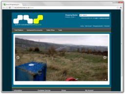
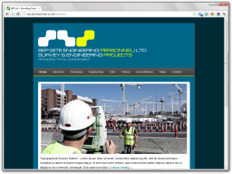
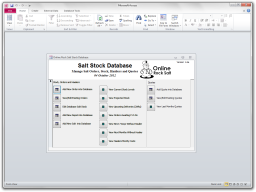
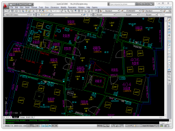
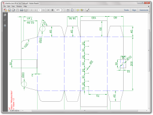
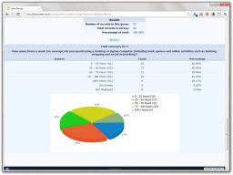
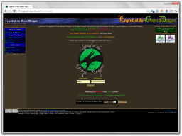
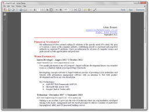

System’s Architect with over 5 years’ experience in systems/product development encompassing all stages of the software development lifecycle. My experience as well as a Master’s Degree in Computer Science allows me to demonstrate my enthusiastic, welcoming and proficient approach in a variety of technical and professional scenarios. I’ve experience working with Microsoft, Experian as well as smaller independent development houses. I’m motivated by finding innovative solutions to challenging problems; and I’m a firm believer in automation, code reuse and new technology adoption.
I can develop a bespoke system which you, your team and your customers will enjoy using. I make a point of using bleeding-edge development techniques and tailor my solutions to your exact specification and budget. All my online work complies with W3C validation checks to ensure compatibility with desktop, tablet and mobile devices. I've placed a number of social network icons at the bottom of the site, please don’t hesitate to contact me with any questions, queries or ideas you have.
 Survey Products
redacted
Launching January 2013
Development Features
e-Commerce CMS
Basket Functionality
PayPal/Cash/Bank Transfers
Customer Accounts
Newsletter Authoring
Stock/Order Management
Company Identity Standardisation
Tested with Mobile ✓
Web Standards Compliant ✓
Motorised Blinds UK
 Motorised Blinds UK
Motorised Blinds UKhttp://motorisedblindsuk.com
October 2012
Development Features
e-Commerce CMS
Basket Functionality
PayPal/Cash/Bank Transfers
Customer Accounts
Newsletter Authoring
Stock/Order Management
Tested with Mobile ✓
Web Standards Compliant ✓ Survey & Engineering Projects
 SEP (Site Engineering Personnel)
redacted
Launching January 2013
Development Features
Content Managed
RSS News Feeds
WYSIWYG Content Authoring
Social Networking
"Reactive" Design Philosophy
Company Identity Standardisation
Tested with Mobile ✓
Web Standards Compliant ✓
Online Rocksalt
 Online Rocksalt Stock Database
redacted
July 2011
Development Features
Visual Basic Frontend
MSSQL Backend Database
Automated Offsite Backup
Multi-User Concurrent Access
Bespoke Reporting Schemas
Company UI Consistency
Modular & Extensable Framework
24/7 Tech Support ✓ University Final Project
 Research & Development Project
May 2011
Development Features
Industry Standard .dwg Drawing
Recorded with Leica 1100
2064 Observations
Reduced with n4ce
Coordinated to OS Grid Tile
Linework with AutoCAD 2010
Plotted as Adobe PDF
Module Score: 72% [A+, First] Graphic Design Work
 Graphic Design Work
April 2012
Development Features
Paper Sketch to CAD Conversion
Industry Standard .dwg Drawing
Linework with AutoCAD 2010
Plotted as Adobe PDF
Uni Questionnaire Hosting
 Legend of the Green Dragon
 Download my CV
